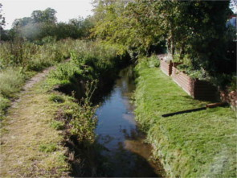
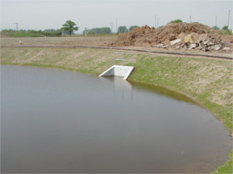
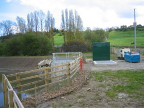
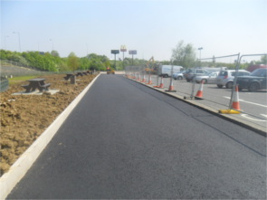
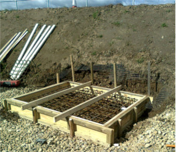
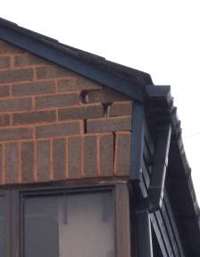

Services We Offer
|
 Flood Risk Assessments to accompany planning applications for new developments. This may include computer modelling of watercourses, assessment of breaches and overtopping of defences. Where appropriate setting finished floor levels above flood levels and designing compensatory floodplain storage. |

Rainfall run-off assessments and design of Sustainable Drainage Systems incorporating, swales infiltration trenches, porous pavements and attenuation ponds. |
|

Design of foul and surface water collection, pumping, treatment and disposal systems. |

Design of site infrastructure including roads, parking areas and foul and surface water drainage. |
|

Design and detailing of reinforced concrete in ground structures such as building foundations, crane pads, retaining walls, thrust blocks and pile caps. |

Inspection and assessment of movement in buildings and design of remedial measures. |
To discuss how we may be able to assist you with your project contact Call George Shuttleworth Ltd. on 01522 787710 or 07940 927285 or Email: geo.shuttleworth@btconnect.com